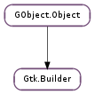

| static | new() |
| static | new_from_file(filename) |
| static | new_from_resource(resource_path) |
| static | new_from_string(string, length) |
| add_callback_symbol(callback_name, callback_symbol) | |
| add_from_file(filename) | |
| add_from_resource(resource_path) | |
| add_from_string(buffer) | |
| add_objects_from_file(filename, object_ids) | |
| add_objects_from_resource(resource_path, object_ids) | |
| add_objects_from_string(buffer, object_ids) | |
| connect_signals(obj_or_map) | |
| connect_signals_full(func, *user_data) | |
| expose_object(name, object) | |
| get_object(name) | |
| get_objects() | |
| get_translation_domain() | |
| get_type_from_name(type_name) | |
| set_translation_domain(domain) | |
| value_from_string(pspec, string) | |
| value_from_string_type(type, string) |
| Name | Type | Flags | Description |
|---|---|---|---|
| translation-domain | str | r/w | The translation domain used by gettext |
None
| Name | Type | Access |
|---|---|---|
| parent_instance | GObject.Object | r |
Bases: GObject.Object
A Gtk.Builder is an auxiliary object that reads textual descriptions of a user interface and instantiates the described objects. To create a Gtk.Builder from a user interface description, call Gtk.Builder.new_from_file (), Gtk.Builder.new_from_resource () or Gtk.Builder.new_from_string ().
In the (unusual) case that you want to add user interface descriptions from multiple sources to the same Gtk.Builder you can call Gtk.Builder.new () to get an empty builder and populate it by (multiple) calls to Gtk.Builder.add_from_file (), Gtk.Builder.add_from_resource () or Gtk.Builder.add_from_string ().
A Gtk.Builder holds a reference to all objects that it has constructed and drops these references when it is finalized. This finalization can cause the destruction of non-widget objects or widgets which are not contained in a toplevel window. For toplevel windows constructed by a builder, it is the responsibility of the user to call Gtk.Widget.destroy () to get rid of them and all the widgets they contain.
The functions Gtk.Builder.get_object () and Gtk.Builder.get_objects () can be used to access the widgets in the interface by the names assigned to them inside the UI description. Toplevel windows returned by these functions will stay around until the user explicitly destroys them with Gtk.Widget.destroy (). Other widgets will either be part of a larger hierarchy constructed by the builder (in which case you should not have to worry about their lifecycle), or without a parent, in which case they have to be added to some container to make use of them. Non-widget objects need to be reffed with GObject.Object.ref () to keep them beyond the lifespan of the builder.
The function Gtk.Builder.connect_signals () and variants thereof can be used to connect handlers to the named signals in the description.
Gtk.Builder UI Definitions
Gtk.Builder parses textual descriptions of user interfaces which are specified in an XML format which can be roughly described by the RELAX NG schema below. We refer to these descriptions as Gtk.Builder UI definitions or just UI definitions if the context is clear. Do not confuse Gtk.Builder UI Definitions with Gtk.UIManager UI Definitions, which are more limited in scope. It is common to use .ui as the filename extension for files containing Gtk.Builder UI definitions.
FIXME: MISSING XINCLUDE CONTENT
The toplevel element is <interface>. It optionally takes a “domain” attribute, which will make the builder look for translated strings using dgettext() in the domain specified. This can also be done by calling Gtk.Builder.set_translation_domain () on the builder. Objects are described by <object> elements, which can contain <property> elements to set properties, <signal> elements which connect signals to handlers, and <child> elements, which describe child objects (most often widgets inside a container, but also e.g. actions in an action group, or columns in a tree model). A <child> element contains an <object> element which describes the child object. The target toolkit version(s) are described by <requires> elements, the “lib” attribute specifies the widget library in question (currently the only supported value is “gtk+”) and the “version” attribute specifies the target version in the form “<major>.<minor>”. The builder will error out if the version requirements are not met.
Typically, the specific kind of object represented by an <object> element is specified by the “class” attribute. If the type has not been loaded yet, GTK+ tries to find the _get_type() from the class name by applying heuristics. This works in most cases, but if necessary, it is possible to specify the name of the _get_type() explictly with the “type-func” attribute. As a special case, Gtk.Builder allows to use an object that has been constructed by a Gtk.UIManager in another part of the UI definition by specifying the id of the Gtk.UIManager in the “constructor” attribute and the name of the object in the “id” attribute.
Objects must be given a name with the “id” attribute, which allows the application to retrieve them from the builder with Gtk.Builder.get_object (). An id is also necessary to use the object as property value in other parts of the UI definition.
Prior to 2.20, Gtk.Builder was setting the “name” property of constructed widgets to the “id” attribute. In GTK+ 2.20 or newer, you have to use Gtk.Buildable.get_name () instead of Gtk.Widget.get_name () to obtain the “id”, or set the “name” property in your UI definition.
Setting properties of objects is pretty straightforward with the <property> element: the “name” attribute specifies the name of the property, and the content of the element specifies the value. If the “translatable” attribute is set to a true value, GTK+ uses gettext() (or dgettext() if the builder has a translation domain set) to find a translation for the value. This happens before the value is parsed, so it can be used for properties of any type, but it is probably most useful for string properties. It is also possible to specify a context to disambiguate short strings, and comments which may help the translators.
Gtk.Builder can parse textual representations for the most common property types: characters, strings, integers, floating-point numbers, booleans (strings like “TRUE”, “t”, “yes”, “y”, “1” are interpreted as True, strings like “FALSE, “f”, “no”, “n”, “0” are interpreted as False ), enumerations (can be specified by their name, nick or integer value), flags (can be specified by their name, nick, integer value, optionally combined with “|”, e.g. “GTK_VISIBLE|GTK_REALIZED”) and colors (in a format understood by Gdk.Color.parse ()). Pixbufs can be specified as a filename of an image file to load. Objects can be referred to by their name and by default refer to objects declared in the local xml fragment and objects exposed via Gtk.Builder.expose_object ().
In general, Gtk.Builder allows forward references to objects — declared in the local xml; an object doesn’t have to be constructed before it can be referred to. The exception to this rule is that an object has to be constructed before it can be used as the value of a construct-only property.
Signal handlers are set up with the <signal> element. The “name” attribute specifies the name of the signal, and the “handler” attribute specifies the function to connect to the signal. By default, GTK+ tries to find the handler using GModule.Module.symbol (), but this can be changed by passing a custom Gtk.BuilderConnectFunc to Gtk.Builder.connect_signals_full (). The remaining attributes, “after”, “swapped” and “object”, have the same meaning as the corresponding parameters of the GObject.signal_connect_object () or GObject.signal_connect_data () functions. A “last_modification_time” attribute is also allowed, but it does not have a meaning to the builder.
Sometimes it is necessary to refer to widgets which have implicitly been constructed by GTK+ as part of a composite widget, to set properties on them or to add further children (e.g. the vbox of a Gtk.Dialog ). This can be achieved by setting the “internal-child” propery of the <child> element to a true value. Note that Gtk.Builder still requires an <object> element for the internal child, even if it has already been constructed.
A number of widgets have different places where a child can be added (e.g. tabs vs. page content in notebooks). This can be reflected in a UI definition by specifying the “type” attribute on a <child>. The possible values for the “type” attribute are described in the sections describing the widget-specific portions of UI definitions.
A Gtk.Builder UI Definition
<interface>
<object class="GtkDialog" id="dialog1">
<child internal-child="vbox">
<object class="GtkVBox" id="vbox1">
<property name="border-width">10</property>
<child internal-child="action_area">
<object class="GtkHButtonBox" id="hbuttonbox1">
<property name="border-width">20</property>
<child>
<object class="GtkButton" id="ok_button">
<property name="label">gtk-ok</property>
<property name="use-stock">TRUE</property>
<signal name="clicked" handler="ok_button_clicked" />
</object>
</child>
</object>
</child>
</object>
</child>
</object>
</interface>
Beyond this general structure, several object classes define their own XML DTD fragments for filling in the ANY placeholders in the DTD above. Note that a custom element in a <child> element gets parsed by the custom tag handler of the parent object, while a custom element in an <object> element gets parsed by the custom tag handler of the object.
These XML fragments are explained in the documentation of the respective objects, see Gtk.Widget, Gtk.Label, Gtk.Window, Gtk.Container, Gtk.Dialog, Gtk.CellLayout, Gtk.ColorSelectionDialog, Gtk.FontSelectionDialog, Gtk.Expander, Gtk.Frame, Gtk.ListStore, Gtk.TreeStore, Gtk.Notebook, Gtk.SizeGroup, Gtk.TreeView, Gtk.UIManager, Gtk.ActionGroup. Gtk.MenuItem, Gtk.MenuToolButton, Gtk.Assistant, Gtk.Scale, Gtk.ComboBoxText, Gtk.RecentFilter, Gtk.FileFilter, Gtk.TextTagTable.
Additionally, since 3.10 a special <template> tag has been added to the format allowing one to define a widget class’s components.
Embedding other XML
Apart from the language for UI descriptions that has been explained in the previous section, Gtk.Builder can also parse XML fragments of Gio.Menu markup. The resulting Gio.Menu object and its named submenus are available via Gtk.Builder.get_object () like other constructed objects.
| Returns: | a new (empty) Gtk.Builder object |
|---|---|
| Return type: | Gtk.Builder |
Creates a new empty builder object.
This function is only useful if you intend to make multiple calls to Gtk.Builder.add_from_file (), Gtk.Builder.add_from_resource () or Gtk.Builder.add_from_string () in order to merge multiple UI descriptions into a single builder.
Most users will probably want to use Gtk.Builder.new_from_file (), Gtk.Builder.new_from_resource () or Gtk.Builder.new_from_string ().
| Parameters: | filename (str) – filename of user interface description file |
|---|---|
| Returns: | a #Gtkbuilder containing the described interface |
| Return type: | Gtk.Builder |
Builds the Gtk.Builder UI definition in the file filename.
If there is an error opening the file or parsing the description then the program will be aborted. You should only ever attempt to parse user interface descriptions that are shipped as part of your program.
| Parameters: | resource_path (str) – a Gio.Resource resource path |
|---|---|
| Returns: | a #Gtkbuilder containing the described interface |
| Return type: | Gtk.Builder |
Builds the Gtk.Builder UI definition at resource_path.
If there is an error locating the resurce or parsing the description then the program will be aborted.
| Parameters: | |
|---|---|
| Returns: | a #Gtkbuilder containing the interface described by string |
| Return type: |
Builds the user interface described by string (in the Gtk.Builder UI definition format).
If string is None-terminated then length should be -1. If length is not -1 then it is the length of string.
If there is an error parsing string then the program will be aborted. You should not attempt to parse user interface description from untrusted sources.
| Parameters: |
|
|---|
Adds the callback_symbol to the scope of builder under the given callback_name.
Using this function overrides the behavior of Gtk.Builder.connect_signals () for any callback symbols that are added. Using this method allows for better encapsulation as it does not require that callback symbols be declared in the global namespace.
| Parameters: | filename (str) – the name of the file to parse |
|---|---|
| Raises: | GLib.GError |
| Returns: | A positive value on success, 0 if an error occurred |
| Return type: | int |
Parses a file containing a Gtk.Builder UI definition and merges it with the current contents of builder.
Most users will probably want to use Gtk.Builder.new_from_file ().
Upon errors 0 will be returned and error will be assigned a GLib.Error from the #GTK_BUILDER_ERROR, #G_MARKUP_ERROR or #G_FILE_ERROR domain.
It’s not really reasonable to attempt to handle failures of this call. You should not use this function with untrusted files (ie: files that are not part of your application). Broken Gtk.Builder files can easily crash your program, and it’s possible that memory was leaked leading up to the reported failure. The only reasonable thing to do when an error is detected is to call g_error().
| Parameters: | resource_path (str) – the path of the resource file to parse |
|---|---|
| Raises: | GLib.GError |
| Returns: | A positive value on success, 0 if an error occurred |
| Return type: | int |
Parses a resource file containing a Gtk.Builder UI definition and merges it with the current contents of builder.
Most users will probably want to use Gtk.Builder.new_from_resource ().
Upon errors 0 will be returned and error will be assigned a GLib.Error from the #GTK_BUILDER_ERROR, #G_MARKUP_ERROR or #G_RESOURCE_ERROR domain.
It’s not really reasonable to attempt to handle failures of this call. The only reasonable thing to do when an error is detected is to call g_error().
| Parameters: | |
|---|---|
| Raises: | |
| Returns: | A positive value on success, 0 if an error occurred |
| Return type: |
Parses a string containing a Gtk.Builder UI definition and merges it with the current contents of builder.
Most users will probably want to use Gtk.Builder.new_from_string ().
Upon errors 0 will be returned and error will be assigned a GLib.Error from the #GTK_BUILDER_ERROR or #G_MARKUP_ERROR domain.
It’s not really reasonable to attempt to handle failures of this call. The only reasonable thing to do when an error is detected is to call g_error().
| Parameters: | |
|---|---|
| Raises: | |
| Returns: | A positive value on success, 0 if an error occurred |
| Return type: |
Parses a file containing a Gtk.Builder UI definition building only the requested objects and merges them with the current contents of builder.
Upon errors 0 will be returned and error will be assigned a GLib.Error from the #GTK_BUILDER_ERROR, #G_MARKUP_ERROR or #G_FILE_ERROR domain.
If you are adding an object that depends on an object that is not its child (for instance a Gtk.TreeView that depends on its Gtk.TreeModel ), you have to explicitely list all of them in object_ids.
| Parameters: | |
|---|---|
| Raises: | |
| Returns: | A positive value on success, 0 if an error occurred |
| Return type: |
Parses a resource file containing a Gtk.Builder UI definition building only the requested objects and merges them with the current contents of builder.
Upon errors 0 will be returned and error will be assigned a GLib.Error from the #GTK_BUILDER_ERROR, #G_MARKUP_ERROR or #G_RESOURCE_ERROR domain.
If you are adding an object that depends on an object that is not its child (for instance a Gtk.TreeView that depends on its Gtk.TreeModel ), you have to explicitely list all of them in object_ids.
| Parameters: | |
|---|---|
| Raises: | |
| Returns: | A positive value on success, 0 if an error occurred |
| Return type: |
Parses a string containing a Gtk.Builder UI definition building only the requested objects and merges them with the current contents of builder.
Upon errors 0 will be returned and error will be assigned a GLib.Error from the #GTK_BUILDER_ERROR or #G_MARKUP_ERROR domain.
If you are adding an object that depends on an object that is not its child (for instance a Gtk.TreeView that depends on its Gtk.TreeModel ), you have to explicitely list all of them in object_ids.
| Parameters: | user_data (object) – a pointer to a structure sent in as user data to all signals |
|---|
This method is a simpler variation of Gtk.Builder.connect_signals_full (). It uses symbols explicitly added to builder with prior calls to Gtk.Builder.add_callback_symbol (). In the case that symbols are not explicitly added; it uses GModule.Module ‘s introspective features (by opening the module None ) to look at the application’s symbol table. From here it tries to match the signal handler names given in the interface description with symbols in the application and connects the signals. Note that this function can only be called once, subsequent calls will do nothing.
Note that unless Gtk.Builder.add_callback_symbol () is called for all signal callbacks which are referenced by the loaded XML, this function will require that GModule.Module be supported on the platform.
If you rely on GModule.Module support to lookup callbacks in the symbol table, the following details should be noted:
When compiling applications for Windows, you must declare signal callbacks with #G_MODULE_EXPORT, or they will not be put in the symbol table. On Linux and Unices, this is not necessary; applications should instead be compiled with the -Wl,–export-dynamic CFLAGS, and linked against gmodule-export-2.0.
| Parameters: |
|
|---|
This function can be thought of the interpreted language binding version of Gtk.Builder.connect_signals (), except that it does not require GModule.Module to function correctly.
| Parameters: |
|
|---|
Add object to the builder object pool so it can be referenced just like any other object built by builder.
| Parameters: | name (str) – name of object to get |
|---|---|
| Returns: | the object named name or None if it could not be found in the object tree. |
| Return type: | GObject.Object |
Gets the object named name. Note that this function does not increment the reference count of the returned object.
| Returns: | a newly-allocated GLib.SList containing all the objects constructed by the Gtk.Builder instance. It should be freed by GLib.SList.free () |
|---|---|
| Return type: | [GObject.Object] |
Gets all objects that have been constructed by builder. Note that this function does not increment the reference counts of the returned objects.
| Returns: | the translation domain. This string is owned by the builder object and must not be modified or freed. |
|---|---|
| Return type: | str |
Gets the translation domain of builder.
| Parameters: | type_name (str) – type name to lookup |
|---|---|
| Returns: | the GObject.Type found for type_name or GObject.TYPE_INVALID if no type was found |
| Return type: | GObject.GType |
Looks up a type by name, using the virtual function that Gtk.Builder has for that purpose. This is mainly used when implementing the Gtk.Buildable interface on a type.
| Parameters: | domain (str or None) – the translation domain or None |
|---|
Sets the translation domain of builder. See Gtk.Builder :translation-domain.
| Parameters: |
|
|---|---|
| Raises: | |
| Returns: | True on success |
| Return type: | bool, value: GObject.Value |
This function demarshals a value from a string. This function calls GObject.Value.init () on the value argument, so it need not be initialised beforehand.
This function can handle str, uchar, boolean, int, uint, long, ulong, enum, flags, float, double, string, Gdk.Color, Gdk.RGBA and Gtk.Adjustment type values. Support for Gtk.Widget type values is still to come.
Upon errors False will be returned and error will be assigned a GLib.Error from the #GTK_BUILDER_ERROR domain.
| Parameters: |
|
|---|---|
| Raises: | |
| Returns: | True on success |
| Return type: | bool, value: GObject.Value |
Like Gtk.Builder.value_from_string (), this function demarshals a value from a string, but takes a GObject.Type instead of GObject.ParamSpec. This function calls GObject.Value.init () on the value argument, so it need not be initialised beforehand.
Upon errors False will be returned and error will be assigned a GLib.Error from the #GTK_BUILDER_ERROR domain.